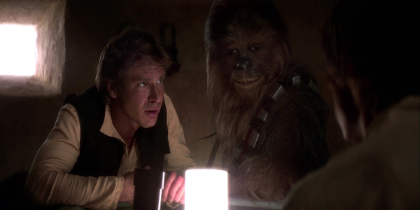

Luke Skywalker stays with his foster aunt and uncle on a farm on Tatooine. He is desperate to get off this planet and get to the Academy like his friends, but his uncle needs him for the next harvest. Meanwhile, an evil emperor has taken over the galaxy, and has constructed a formidable "Death Star" capable of destroying whole planets. Princess Leia, a leader in the resistance movement, acquires plans of the Death Star, places them in R2-D2, a droid, and sends him off to find Obi-Wan Kenobi
Before he finds him, R2-D2 ends up on the Skywalkers' farm with his friend C-3PO. R2-D2 then wanders into the desert, and when Luke follows, they eventually come across Obi-Wan. Will Luke, Obi-Wan and the two droids be able to destroy the Death Star, or will the Emperor rule forever?
